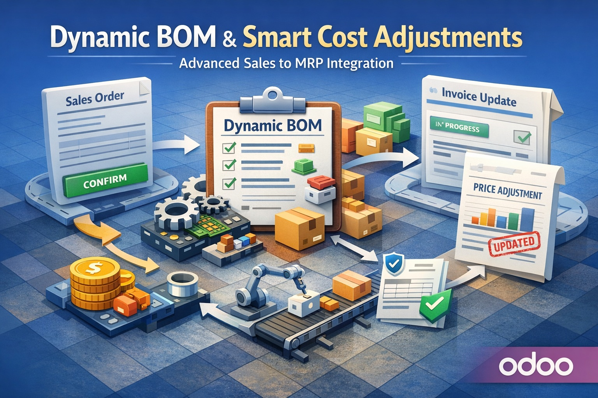

Build customer-specific BOMs directly from Sale Orders and automate Manufacturing with full control, traceability, and financial accuracy.
Smart Dynamic BOM for Sales & Manufacturing seamlessly bridges the gap between Sales and Manufacturing in Odoo 19.
It enables your team to define configurable component options for each product, allowing sales users to select the exact components required directly from the Sale Order line — before or after confirmation.
Based on these selections, the module automatically generates a dynamic Bill of Materials (BOM) and creates the corresponding Manufacturing Order, ensuring that production always reflects customer-specific requirements.
Beyond operational flexibility, the module reinforces governance and accounting control by maintaining full traceability between selected components, manufacturing consumption, and financial impact.
The result is a fully synchronized workflow across Sales, Manufacturing, and Accounting — reducing manual intervention, minimizing errors, and improving efficiency.
Define flexible component groups with rules and restrictions.
Select components directly from Sale Order lines.
Automatically generate Manufacturing Orders.
Keep pricing, BOM, and production aligned.
Automatically adjust invoices when components change.
Generate clear component reports.
Control modifications after confirmation.
Prevent invalid component combinations.
Move from manual BOM handling to a smart, automated workflow driven directly by sales.